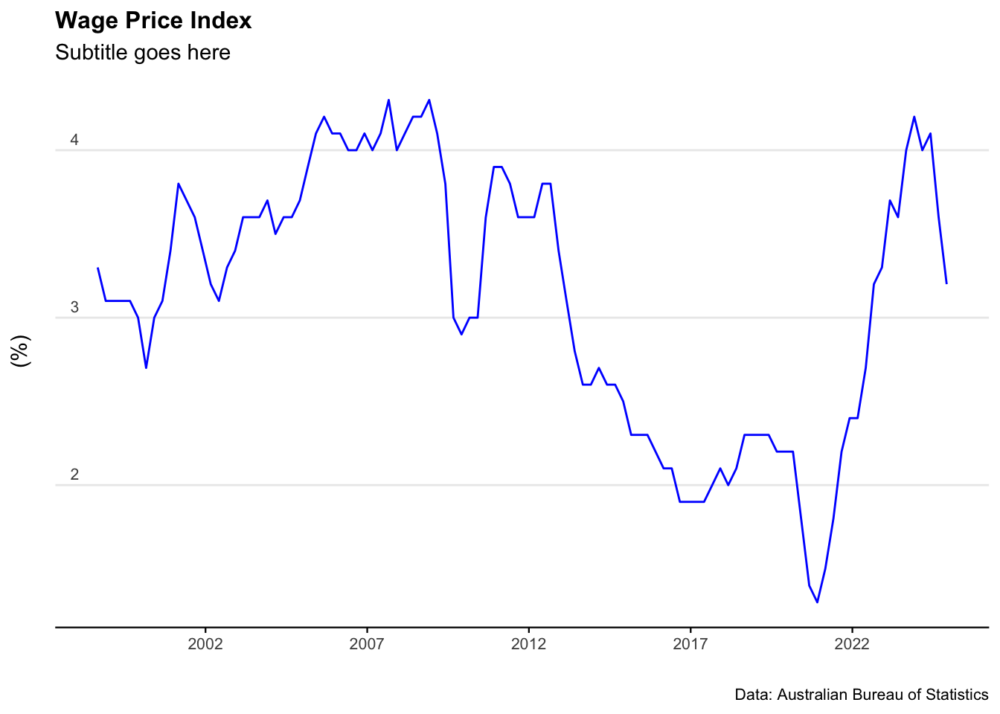
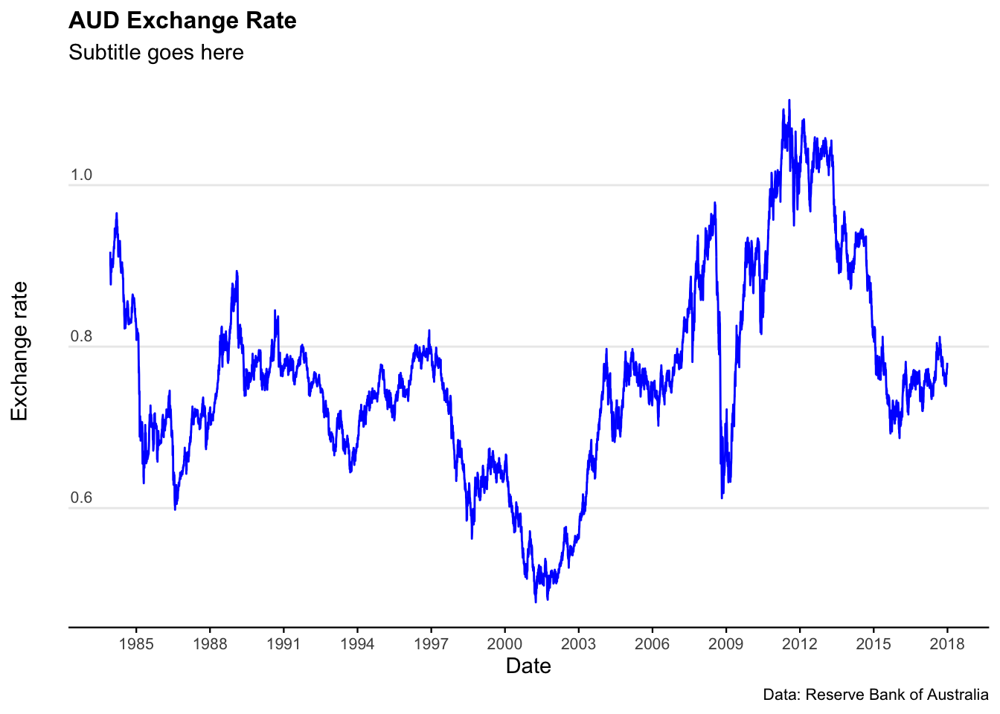
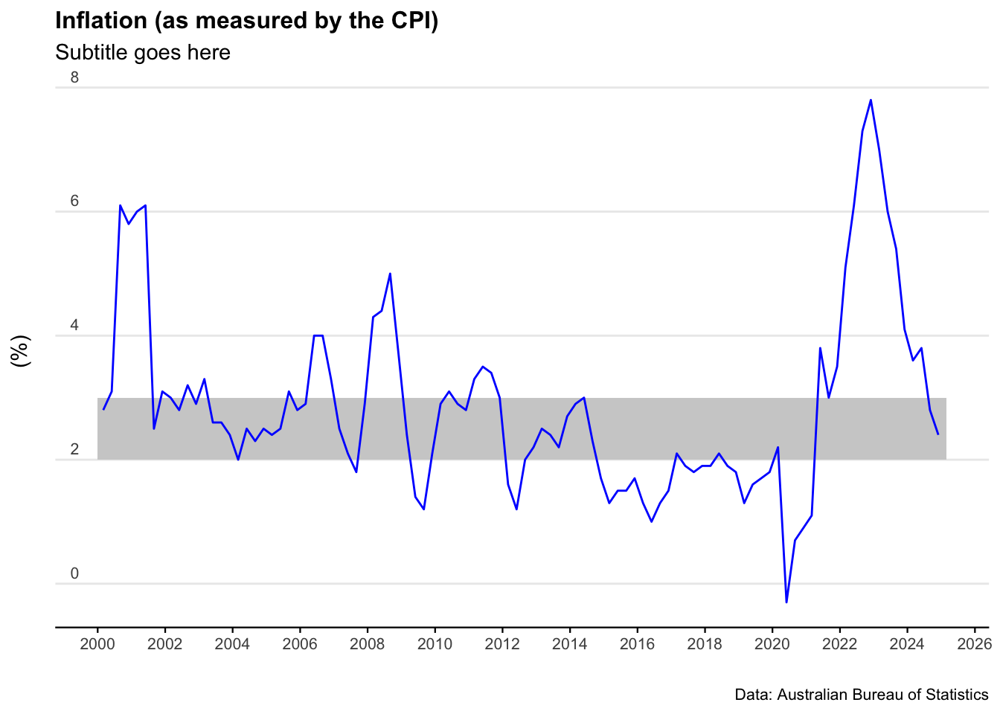
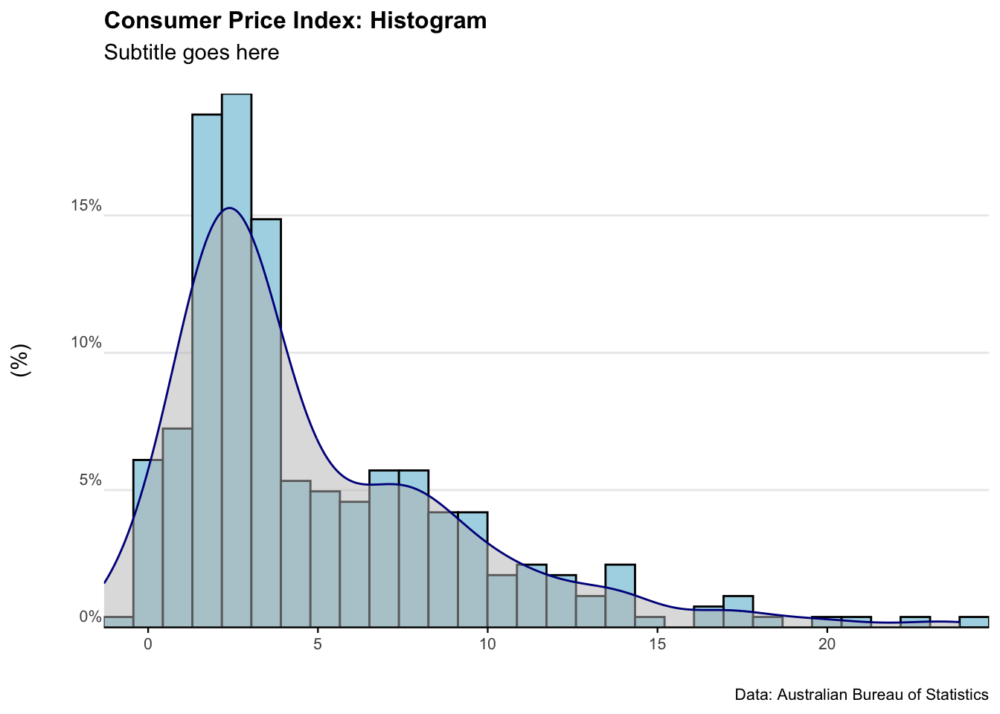

Chapter 12 Australian economic data
Australia has exceptional financial and economic institutions. Three of these institutions release periodic data useful for economic analysis:
As usual, there are catches. Most of this data is in inconsistent formats (the reasons for which continue to baffle me). What’s more, it’s currently not possible to ping databases or API’s for access to this data… it is mainly accessed through spreadsheets.
The scripts below run through some of the main ways to import, clean, and analyse Australian macroeconomic data in R.
Some of the key packages we’ll use are readabs and readrba.
To get started, let’s install and load packages.
# Loads the required packages
pacman::p_load(
ggmap, tmaptools, RCurl, jsonlite, tidyverse,
leaflet, writexl, readr, readxl, readabs, readrba, lubridate,
zoo, scales
)##
## There are binary versions available but the source versions are later:
## binary source needs_compilation
## sf 1.0-15 1.0-20 TRUE
## stars 0.5-5 0.6-8 FALSE
## tmaptools 3.1-1 3.2 FALSE12.1 GDP
To get GDP data from the ABS, we’ll use the read_abs function from the readrba package.
#For simplicity, we keep the download function seperate to the analysis
all_gdp <- readabs::read_abs("5206.0", tables=2)#Select the seasonally adjusted data and filter for data and value columns
gdp_level <- all_gdp %>%
filter(series == "Gross domestic product: Chain volume measures ;",
!is.na(value)) %>%
filter(series_type =="Seasonally Adjusted") %>%
dplyr::select(date,value) %>%
dplyr::rename(quarterly_output=value)
gdp_level <- gdp_level %>%
mutate(quarterly_growth_rate =
((quarterly_output / lag(quarterly_output,1)-1))*100) %>%
mutate(annual_gdp =
rollapply(quarterly_output,
4,
sum,
na.rm=TRUE,
fill = NA,
align = "right")) %>%
mutate(annual_gdp_trillions=annual_gdp/1000000)%>%
mutate(annual_growth_rate =
((annual_gdp / lag(annual_gdp, 4) - 1))*100)%>%
mutate(Quarter_of_year =
lubridate::quarter(date,
with_year = FALSE,
fiscal_start = 1))
#Set a baseline value
gdp_level$baseline_value <- gdp_level$quarterly_output[
which(gdp_level$date =="2022-03-01")]
gdp_level <- gdp_level %>%
mutate(baseline_comparison =
(quarterly_output/baseline_value)*100)
tail(gdp_level)## # A tibble: 0 × 9
## # ℹ 9 variables: date <date>, quarterly_output <dbl>,
## # quarterly_growth_rate <dbl>, annual_gdp <dbl>, annual_gdp_trillions <dbl>,
## # annual_growth_rate <dbl>, Quarter_of_year <int>, baseline_value <dbl>,
## # baseline_comparison <dbl>Now we can plot the GDP data for Australia.
plot_gdp <- ggplot(data=gdp_level)+
geom_line((aes(x=date, y=annual_gdp_trillions)), col="blue") +
labs(title = "Australian GDP ($AUD)",
subtitle = "Annualised figures",
caption = "Data: Australian Bureau of Statistics",
y = "",
x = " ")+
scale_y_continuous(breaks = c(0,0.5,1.0,1.5,2.0,2.5),
labels = label_number(suffix = " trillion"))+
scale_x_date(date_breaks = "10 years", date_labels="%Y")+
theme_minimal() +
theme(legend.position="bottom")+
theme(plot.title=element_text(face="bold", size=12))+
theme(plot.subtitle=element_text(size=11))+
theme(plot.caption=element_text(size=8))+
theme(axis.text=element_text(size=8))+
theme(panel.grid.minor = element_blank())+
theme(panel.grid.major.x = element_blank()) +
theme(axis.title.y =
element_text(margin = ggplot2::margin(t = 0, r = 0, b = 0, l = 0)))+
theme(axis.text.y = element_text(vjust = -0.5,
margin = ggplot2::margin(l = 20, r = -45)))+
theme(axis.line.x = element_line(colour ="black", size=0.4))+
theme(axis.ticks.x = element_line(colour ="black", size=0.4))
plot_gdp
12.2 Unemployment rate
Download the data
Clean and analyse the data
unemployment_rate <- all_unemployment %>%
filter(series == "Unemployment rate ; Persons ;",!is.na(value)) %>%
filter(table_title=="Table 1. Labour force status by Sex, Australia - Trend, Seasonally adjusted and Original") %>%
filter(series_type =="Seasonally Adjusted") %>%
mutate(mean_unemployment_rate=mean(value)) %>%
mutate(percentile_25=quantile(value,0.25))%>%
mutate(percentile_75=quantile(value,0.75)) %>%
dplyr::select(date,value,mean_unemployment_rate,percentile_25,percentile_75)
tail(unemployment_rate)## # A tibble: 6 × 5
## date value mean_unemployment_rate percentile_25 percentile_75
## <date> <dbl> <dbl> <dbl> <dbl>
## 1 2024-08-01 4.14 6.57 5.27 7.92
## 2 2024-09-01 4.07 6.57 5.27 7.92
## 3 2024-10-01 4.11 6.57 5.27 7.92
## 4 2024-11-01 3.94 6.57 5.27 7.92
## 5 2024-12-01 3.98 6.57 5.27 7.92
## 6 2025-01-01 4.11 6.57 5.27 7.92Plot the data
plot_unemployment_rate <- ggplot(data=unemployment_rate)+
geom_line(aes(x = date, y = value), col = "blue") +
labs(title = "Unemployment rate",
subtitle = "Subtitle goes here",
caption = "Data: Australian Bureau of Statistics",
y = "Unemployment rate (%)",
x = " ")+
scale_y_continuous(labels = scales::comma)+
scale_x_date(date_breaks = "10 years", date_labels="%Y")+
theme_minimal() +
theme(legend.position="bottom")+
theme(plot.title=element_text(face="bold", size=12))+
theme(plot.subtitle=element_text(size=11))+
theme(plot.caption=element_text(size=8))+
theme(axis.text=element_text(size=8))+
theme(panel.grid.minor = element_blank())+
theme(panel.grid.major.x = element_blank()) +
theme(axis.title.y =
element_text(margin = ggplot2::margin(t = 0, r = 0, b = 0, l = 0)))+
theme(axis.text.y = element_text(vjust = -0.5,
margin = ggplot2::margin(l = 20, r = -15)))+
theme(axis.line.x = element_line(colour ="black", size=0.4))+
theme(axis.ticks.x = element_line(colour ="black", size=0.4))
plot_unemployment_rate
12.3 Inflation (CPI)
Download the data
Clean and analyse the data
Australia_CPI <- all_CPI %>%
filter(series == "Percentage Change from Corresponding Quarter of Previous Year ; All groups CPI ; Australia ;",!is.na(value)) %>%
mutate(mean_CPI=mean(value)) %>%
mutate(percentile_25=quantile(value,0.25))%>%
mutate(percentile_75=quantile(value,0.75)) %>%
dplyr::select(date, value,mean_CPI,percentile_25,percentile_75)
tail(Australia_CPI)## # A tibble: 6 × 5
## date value mean_CPI percentile_25 percentile_75
## <date> <dbl> <dbl> <dbl> <dbl>
## 1 2023-09-01 5.4 4.95 1.92 7.28
## 2 2023-12-01 4.1 4.95 1.92 7.28
## 3 2024-03-01 3.6 4.95 1.92 7.28
## 4 2024-06-01 3.8 4.95 1.92 7.28
## 5 2024-09-01 2.8 4.95 1.92 7.28
## 6 2024-12-01 2.4 4.95 1.92 7.28Plot the data
plot_CPI <- ggplot(data = Australia_CPI %>%
filter(date > as.Date("2000-01-01"))) +
geom_rect(aes(xmin = as.Date("2000-01-01"),
xmax = as.Date("2025-03-01"),
ymin = 2,
ymax = 3),
alpha = 0.1, # Adjusted alpha for better visibility
fill = "lightgrey") +
geom_line(aes(x = date, y = value), col = "blue") +
scale_x_date(date_breaks = "2 years", date_labels = "%Y") +
labs(title = "Inflation (as measured by the CPI)",
subtitle = "Subtitle goes here",
caption = "Data: Australian Bureau of Statistics",
y = "(%)",
x = "") +
scale_y_continuous(labels = scales::comma) +
theme_minimal() +
theme(legend.position = "bottom") +
theme(plot.title = element_text(face = "bold", size = 12)) +
theme(plot.subtitle = element_text(size = 11)) +
theme(plot.caption = element_text(size = 8)) +
theme(axis.text = element_text(size = 8)) +
theme(panel.grid.minor = element_blank()) +
theme(panel.grid.major.x = element_blank()) +
theme(axis.title.y = element_text(margin = ggplot2::margin(t = 0, r = 0, b = 0, l = 0))) +
theme(axis.text.y = element_text(vjust = -0.5,
margin = ggplot2::margin(l = 20, r = -15))) +
theme(axis.line.x = element_line(colour = "black", size = 0.4)) +
theme(axis.ticks.x = element_line(colour = "black", size = 0.4))
plot_CPI
Plot a histogram of the data
plot_CPI_hist <- ggplot(Australia_CPI, aes(x = value)) +
geom_histogram(aes(y = ..density..),
colour = "black", fill = "lightblue") +
geom_density(alpha = .5, fill = "grey", colour = "darkblue") +
scale_x_continuous(expand = c(0, 0)) + # Remove extra space on the x-axis
labs(title = "Consumer Price Index: Histogram",
subtitle = "Subtitle goes here",
caption = "Data: Australian Bureau of Statistics",
y = "(%)",
x = "") +
scale_y_continuous(labels = scales::percent, expand = c(0, 0)) + # Ensure no space on y-axis
theme_minimal() +
theme(
legend.position = "bottom",
plot.title = element_text(face = "bold", size = 12),
plot.subtitle = element_text(size = 11, margin = ggplot2::margin(b = 15)),
plot.caption = element_text(size = 8),
axis.text = element_text(size = 8),
panel.grid.minor = element_blank(),
panel.grid.major.x = element_blank(),
axis.title.y = element_text(margin = ggplot2::margin(t = 0, r = 0, b = 20, l = 0)),
axis.text.y = element_text(vjust = -0.5, margin = ggplot2::margin(l = 20, r = -2)),
axis.line.x = element_line(colour = "black", size = 0.4),
axis.ticks.x = element_line(colour = "black", size = 0.4)
)
plot_CPI_hist
12.4 Wage Price Index
Download the data
Clean and analyse the data
Australia_WPI <- all_wpi %>%
filter(series == "Percentage Change From Corresponding Quarter of Previous Year ; Australia ; Total hourly rates of pay excluding bonuses ; Private and Public ; All industries ;",
!is.na(value)) %>%
filter(series_type=="Seasonally Adjusted") %>%
mutate(mean_WPI=mean(value)) %>%
dplyr::select(date, value,mean_WPI)
tail(Australia_WPI)## # A tibble: 6 × 3
## date value mean_WPI
## <date> <dbl> <dbl>
## 1 2023-09-01 4 3.12
## 2 2023-12-01 4.2 3.12
## 3 2024-03-01 4 3.12
## 4 2024-06-01 4.1 3.12
## 5 2024-09-01 3.6 3.12
## 6 2024-12-01 3.2 3.12Plot the data
plot_WPI <- ggplot(data=Australia_WPI)+
geom_line(aes(x = date, y = value), col = "blue") +
labs(title = "Wage Price Index",
subtitle = "Subtitle goes here",
caption = "Data: Australian Bureau of Statistics",
y = "(%)",
x = " ")+
scale_y_continuous(labels = scales::comma)+
scale_x_date(date_breaks = "5 years", date_labels="%Y")+
theme_minimal() +
theme(legend.position="bottom")+
theme(plot.title=element_text(face="bold", size=12))+
theme(plot.subtitle=element_text(size=11))+
theme(plot.caption=element_text(size=8))+
theme(axis.text=element_text(size=8))+
theme(panel.grid.minor = element_blank())+
theme(panel.grid.major.x = element_blank()) +
theme(axis.title.y =
element_text(margin = ggplot2::margin(t = 0, r = 0, b = 0, l = 0)))+
theme(axis.text.y = element_text(vjust = -0.5,
margin = ggplot2::margin(l = 20, r = -15)))+
theme(axis.line.x = element_line(colour ="black", size=0.4))+
theme(axis.ticks.x = element_line(colour ="black", size=0.4))
plot_WPI
12.5 AUD exchange rate
God knows why - but there are super quirky names for the official exchange rate tables
Download the data
exchange_rate_all<- readrba::read_rba(table_no = (c("ex_daily_8386",
"ex_daily_8790",
"ex_daily_9194",
"ex_daily_9598",
"ex_daily_9902",
"ex_daily_0306",
"ex_daily_0709",
"ex_daily_1013",
"ex_daily_1417",
"ex_daily_18cur")),
cur_hist = "historical")Clean and analyse the data
exchange_rate_AUD <- exchange_rate_all %>%
filter(series=="A$1=USD") %>%
dplyr::select(date, value)
tail(exchange_rate_AUD)## # A tibble: 6 × 2
## date value
## <date> <dbl>
## 1 2017-12-20 0.766
## 2 2017-12-21 0.767
## 3 2017-12-22 0.771
## 4 2017-12-27 0.774
## 5 2017-12-28 0.779
## 6 2017-12-29 0.78Plot the data
plot_exchange_rate_AUD <- ggplot(data = exchange_rate_AUD) +
geom_line(aes(x = date, y = value), col = "blue") +
labs(
title = "AUD Exchange Rate",
subtitle = "Subtitle goes here",
caption = "Data: Reserve Bank of Australia",
y = "Exchange rate", # Adding a Y-axis label
x = "Date"
) +
scale_y_continuous(labels = scales::comma) +
scale_x_date(date_breaks = "3 years", date_labels = "%Y") +
theme_minimal() +
theme(
plot.title = element_text(face = "bold", size = 12),
plot.subtitle = element_text(size = 11),
plot.caption = element_text(size = 8),
axis.text = element_text(size = 8),
axis.title.y = element_text(margin = ggplot2::margin(t = 0, r = 0, b = 0, l = 0)),
axis.text.y = element_text(vjust = -0.5, margin = ggplot2::margin(l = 20, r = -15)),
axis.line.x = element_line(colour = "black", size = 0.4),
axis.ticks.x = element_line(colour = "black", size = 0.4),
panel.grid.minor = element_blank(),
panel.grid.major.x = element_blank(),
legend.position = "bottom"
)
plot_exchange_rate_AUD